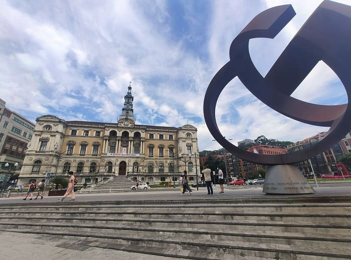
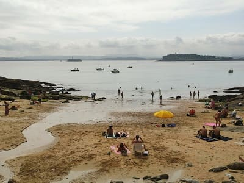
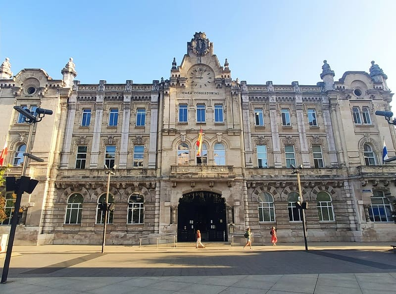
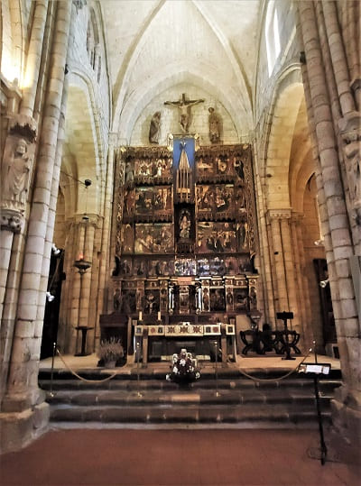
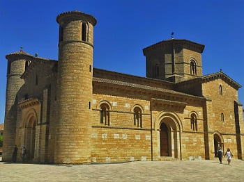
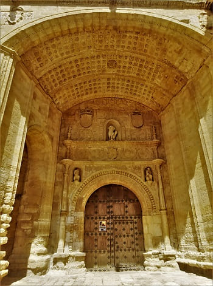
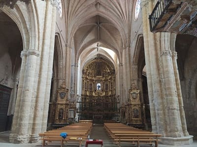

The departure of the first day was from Guadalajara to Miranda de Ebro. The cities visited were Buitrago de Lozoya in the Community of Madrid, where its castle and its wall stand out, as well as its main church. Aranda de Duero, with several Gothic-style churches, with Santa María as a reference point with a door that stands out. In addition, the church of San Juan and its numerous wineries with denomination of origin wine. One of the most important is the one in the Sanctuary of the Virgen de las Viñas.


Other monuments to visit are the arch of Santa María that can be seen in the image, the bridge of San Pablo, the walls and its castle, the house of the cord in the images below and the monastery of Las Huelgas. This monastery is one of the most historically important in Spain. It began as a ciesternian monastery of nuns but later it would have great relevance due to the fact that a Royal pantheon would be built where the most influential figures of the 13th and 14th centuries can be found, such as Enrique I of Castile, Fernando de la Cerda or Eleanor of Castile. between the most important and the kings who had it built in the central nave.
In addition to this pantheon, it has a very well preserved Romanesque cloister which, together with the Santo Domingo de Silos in Burgos, is the best. The walls have many details of Mudejar plasterwork, with Arabic calligraphy in several areas. The ceilings are in the Mudejar style, which was added in the 15th century, when Toledo was already Castilian and this style had spread throughout the Christian peninsula. In addition to being a fortress monastery it also has a tower. In addition, like other monasteries of great importance of the time such as that of Guadalupe in Extremadura, the nuns were dedicated to creating high quality pieces, such as dresses, or tools, or books which can be found in the museum of Rich Medieval Fabrics in its interior. Many of these pieces date from the 13th and 14th century.

This time I depart from Miranda de Ebro to visit towns in the south of the area such as Sajazarra and Casalarreina, both towns within the 100 most beautiful in Spain. Santo Domingo de la Calzada as the main course of the day with its impressive cathedral, and its medieval atmosphere, a passing city on the Camino de Santiago.
Santo Domingo de la Calzada's main attraction is its cathedral, as I have mentioned, but you can also visit the great wall around the old town, which is very well preserved. Several of the sections have been converted into homes over the years, taking advantage of its stone for its walls. Also the convent that today is a museum and tourist hostel. In the museum there are pieces from the convent itself as well as objects from the town.

Leaving Miranda de Ebro I am on my way to Briñas. Briñas is a very charming town due to its proximity to the Ebro River. Apart from the stately coats of arms on some of its houses, we find a beautiful square and an old church. There is also a path that runs along the river and there are nautical activities.
From Briñas I head towards San Vicente de Sonsierra, a town with an imposing fortress. In addition, at the tourist office they indicated an application to me through the mobile phone to be able to see places of the castle as they were at different times. From the fifteenth to the twentieth century. Paths transformed into highways or houses with which they change or disappear. This application has several sites in Spain, and is part of the Virtual reality that is being investigated so much.
From San Vicente I change the road to go to Briones , leaving aside Samaniego, a town that would also have deserved to visit but due to lack of time I discarded it. The most unique thing about this town is its structure, which has almost the entire hull at the top of the town with numerous viewpoints and a wall that little by little has been replacing the houses of the town. It has several chapels or hermitages and a well-kept square with a very showy and very large church.
Then I'll move to Haro right back. This town is much larger than the previous ones and is very important in La Rioja, due to the great wine industry. It has several of the largest wineries in Spain and also has a well-kept historic center with numerous churches and numerous palaces or stately homes. In addition, the area of tapas bars is very visited from other towns in the area or from the Basque Country.

 I leave Miranda early to get to Frías and make a circuit of several towns in Burgos. Frias stands out for the place in which it is located, with its movie castle on top of the mountain, and its cobbled streets with a medieval touch. It also has some houses that seem to cling to the rock like the Hanging Houses of Cuenca. In fact there are more houses than in Cuenca and at the top there is a wall that surrounds the top of the town, as well as a church with a wide lawn that, due to the heights, reminds me a lot of the house of the governor of Gondorn in Lord of the Rings.
I leave Miranda early to get to Frías and make a circuit of several towns in Burgos. Frias stands out for the place in which it is located, with its movie castle on top of the mountain, and its cobbled streets with a medieval touch. It also has some houses that seem to cling to the rock like the Hanging Houses of Cuenca. In fact there are more houses than in Cuenca and at the top there is a wall that surrounds the top of the town, as well as a church with a wide lawn that, due to the heights, reminds me a lot of the house of the governor of Gondorn in Lord of the Rings.
After walking through Frias I head towards Oña, a town quite lost in the mountains of Burgos with a treasure inside. This treasure is the monastery of San Salvador de Oña, where many of the first kings of Castile rest after the reconquest. It must be taken into account that Burgos was the origin of the Castilian we know today and that the north was one of the first territories controlled by Castile until the occupation of the capital of Burgos where it would be the capital of the kingdom for several years.

 After visiting the monastery and its surroundings, I leave for Poza de Sal, a town known for the salt business in ancient times, for its castle at the top of the town with great views, for the beauty of its streets and for being the birthplace of the naturologist Felix Rodriguez de la Fuente, who was one of the first to express his rejection of the changes of man in the Iberian Peninsula, habitat of many species that were already threatened. There is a museum where they show a little about the life of this great man.
After visiting the monastery and its surroundings, I leave for Poza de Sal, a town known for the salt business in ancient times, for its castle at the top of the town with great views, for the beauty of its streets and for being the birthplace of the naturologist Felix Rodriguez de la Fuente, who was one of the first to express his rejection of the changes of man in the Iberian Peninsula, habitat of many species that were already threatened. There is a museum where they show a little about the life of this great man.
After finishing the route of these towns, I will stop in Pancorbo to see the town that, although not as touristy as these three, has quite a bit of charm, and I will turn to Vitoria so that in a full afternoon I can see the capital. The capital of Álava is quite large but its historic center can be seen perfectly in one day. If we also know where to park and what to see specifically, in 5 hours it will give enough time to explore it. It is worth mentioning the Plaza de la Virgen Blanca with the San Miguel Arcángel church and the niche of the Virgen Blanca, patron saint of the city. Also next to that square is the Plaza de España, where the town hall is located.


 The most notable building is the Cathedral of Santa María, which is still under construction and may be the cathedral that will take the longest to build in all of Spain, since there were problems about 100 years ago because cracks and structural problems were discovered that could have given lead to its collapse. For this reason, it was planned to completely restore the foundations and do it almost from the beginning, placing the cathedral stone by stone in another place and placing it with reinforced security elements. In addition to the foundations, the tower itself, which is the tallest in the city, has been restored to be able to climb many people since it is quite large in area with different materials including stone and wood. A highly recommended visit due to the fact that it has such a long history in construction and such different architectural elements. It also has an audiovisual show for the porch of light where you can see what it was like at different times.
The most notable building is the Cathedral of Santa María, which is still under construction and may be the cathedral that will take the longest to build in all of Spain, since there were problems about 100 years ago because cracks and structural problems were discovered that could have given lead to its collapse. For this reason, it was planned to completely restore the foundations and do it almost from the beginning, placing the cathedral stone by stone in another place and placing it with reinforced security elements. In addition to the foundations, the tower itself, which is the tallest in the city, has been restored to be able to climb many people since it is quite large in area with different materials including stone and wood. A highly recommended visit due to the fact that it has such a long history in construction and such different architectural elements. It also has an audiovisual show for the porch of light where you can see what it was like at different times.


 Vitoria is a city where there is an urban art project called IMVG (Vitoria-Gasteiz Mural Route) The painted city whose objective is to produce public works of art with the involvement of society in general, so we mark some of the murals that decorate the walls of buildings in the city because, I don't know if I've already mentioned it, but I've discovered that I love urban art.
Vitoria is a city where there is an urban art project called IMVG (Vitoria-Gasteiz Mural Route) The painted city whose objective is to produce public works of art with the involvement of society in general, so we mark some of the murals that decorate the walls of buildings in the city because, I don't know if I've already mentioned it, but I've discovered that I love urban art.
The project is currently made up of 19 murals painted between 2007 and 2019, I understand that it is a living project that has been paralyzed by COVID-19. They are scattered throughout the city but we only saw 9 that are in the historic center, which is popularly called the almond of Vitoria, maybe in future visits we can add some more, for now here I show you the ones that we were able to admire during the day we spent in the capital of Alava. That is why there is a great contrast with the age of the buildings that exist since the colors are quite bright and warm compared to the gray buildings that surround them.
Once the visit is over, I will return to Miranda de Ebro.

I leave Miranda de Ebro on the way to Santander and make the first stop in Llodio, a town that, despite being large, barely has to see the main square. I continue towards Bilbao and leave the car in Parque Europa, near the Bolueta neighborhood. There I leave for the historic center, finding myself with a multitude of important buildings around the Bilbao estuary. The theater, churches, palaces and many buildings with a lot of history. Once I reach the Plaza del Arenal, I will enter the true historic center, where the Bilbao Cathedral is, numerous old shops and many tapas bars and very important restaurants in which the quality of the raw material and the fame of many chefs it has catapulted to its stardom and the prices also show it.

After leaving this area, I will visit the church of San Nicolas, the town hall and head along the estuary to see modern Bilbao, with its tall buildings and the Calatrava bridge, as well as the Guggenheim museum. In that area you can see the entire estuary, with the port cranes and the maritime museum. I will leave for the most modern Bilbao, from the last century, with Moyua, Doña Casilda Park and San Mames, Athletic's stadium. The most modern buildings of which I will expose some images are:

I leave for Santander very early, taking a seat for the car in the public parking lot in the Alta area. It is one of the few places that do not require payment and are very close to the historic center, and as you arrive you have to stand in line so that whoever leaves leaves your place. There is a system between neighbors in the area to park the car all day.
Once parked, I head to the center where I will see the Plaza Porticada, the cathedral and its crypt, the town hall, the market square next to the church of San Francisco de Asís.
After seeing the center I will take a bus that will take me to the Sardinero area where I will go for a walk, seeing the casino, the stately homes that surround the Sardinero, and I will head towards the bay to reach the lighthouse and visit the coves between stockings. We will be able to see the beach of the Molinucos, and the path of Mataleñas. Then I will go to the port to catch a tourist boat that will take me to Somo beach where I will take a long walk. The day in Santander, despite being the height of summer, was very cloudy but the sun was still shining.


We can see the beach of the Molinucos, in the image, and the path of Mataleñas. Then I will go to the port to catch a tourist boat that will take me to Somo beach (in the image) where I will take a long walk. The day in Santander, despite being the height of summer, was very cloudy but the sun was still shining.
I eat on the boat together with my friend Germán who is half from Santander. And in the afternoon I will go to the bar area, after taking another walk along the promenade to leave for Palencia with a stop at Aguilar de Campoo. Between Cantabria and Palencia on the highway I had one of the worst experiences on the highway with a very thick fog in the middle of summer and with the civil guard lighting up because you couldn't see anything. Despite the quality of the motorway, it was very dangerous to drive at more than 80. It was approaching 30 km from Aguilar de Campoo and all the fog disappeared and summer returned.
Already in Aguilar de Campoo I will make a quick visit to this small town. With a very nice Romanesque church, Santa Cecilia, near the castle, this town has quite a bit of history. A square with large arcades and a Romanesque-style church, San Miguel, makes it one of the most beautiful villages. It has a couple of big renowned monasteries, Santa María la Real and Santa Clara.
After the visit I will spend the night in a good hotel on a road 30 km from the highway. Strategic place for visiting the most unique towns of Palencia, the beautiful unknown.
I left a pretty good roadside hotel at the Los Chopos gas station. From there I will continue along the A-231 that leads from Palencia to León towards Carrión de los Condes. This town, together with Sahagún and Aguilar de Campoo, make up the most important towns in Palencia. In Carrión de los Condes and Sahagún, The Ages of Man are also exhibited in 2021, which brings together the most important figures, carvings and relics of the main churches and religious buildings. Every year it changes province and this year it was in Palencia.
In Carrión de los condes the most important monuments are the monastery of San Zoilo, the church of Santiago and the church of Santa María del Camino, both Romanesque with doors carved with different figures. They also highlight the church of Our Lady of Bethlehem. The town is quite small in size and can be seen perfectly in one morning.

We return along the road to the east to see different towns with Romanesque jewels. We head towards Fromista and before arriving we will enter Villalcazar de Sirga and we will come across the imposing church of Santa María La Blanca. This church was very important in the Middle Ages, the burial place of the brother of Alfonso X el Sabio and his wife. The entrance gate stands out and in general the whole temple. Having seemed to me one of the best monuments in Palencia, next to the cathedral and the church of Tamara de Campos.

Once we have seen this church, we head towards Fromista where we will find the Romanesque church of San Martín de Tours, which gives its name to the Fromista style, a very simple style that comes from the Romanesque. In this church, the capitals and the sober interior style stand out. Other Romanesque churches to see are San Pedro, and Santa María del Castillo. In addition, you can see the lock system of the Castilla canal, a natural area where there are paths for cycling and hiking.

Tras salir de Fromista, visitaremos primeramente Santoyo y seguidamente, Tamara de Campos donde se encuentran la iglesia de San Juan Bautista y la iglesia de San Hipolito el Real, respectivamente, recientemente restaurada y limpiada por dentro. Los retablos de estas dos iglesias son auténticas joyas, y en San Hipolito además se encuentran diferentes figuras talladas en el interior en los muros.
When I finish seeing these two churches, I will travel to Palencia. There I will eat in a restaurant with a fairly complete menu near the roundabout dedicated to the Iberian peasant. In Palencia, I will move parallel to the Carrión river to enter the historic center at the height of the Puente Mayor.
© 2016 - All Rights Reserved - Diseñada por Sergio López Martínez
El sitio se mantiene gracias a la publicidad, por favor Desactiva Adblock para seguir navegando
He desactivado Adblock![[Valid RSS]](https://www.onepointsync.com/wp-content/uploads/2016/08/valid-rss-rogers.png "Validate my RSS feed")